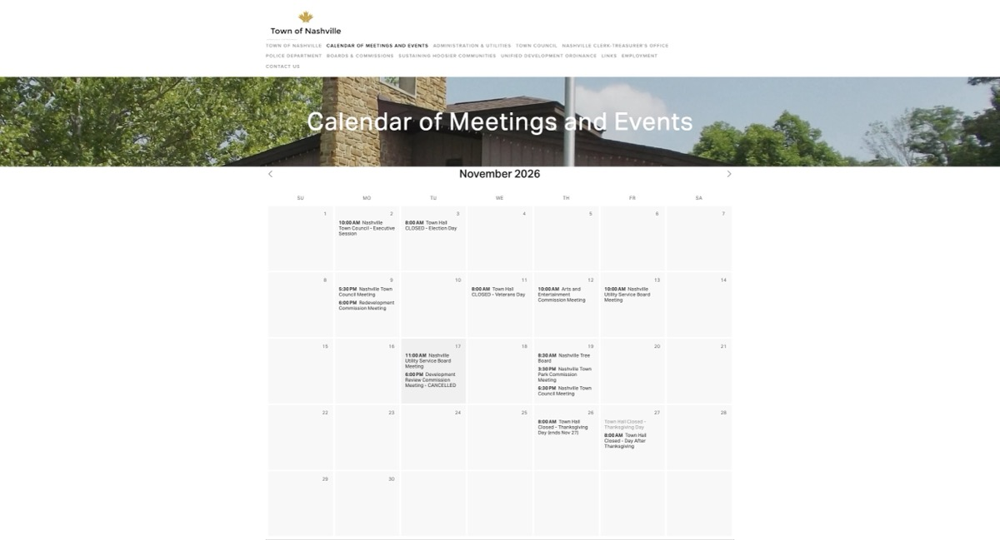
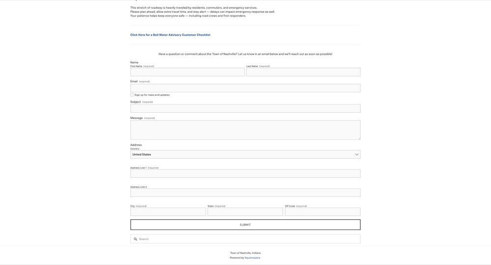
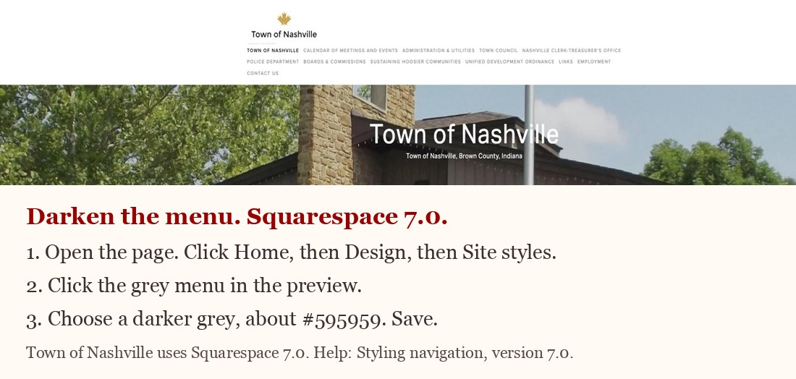
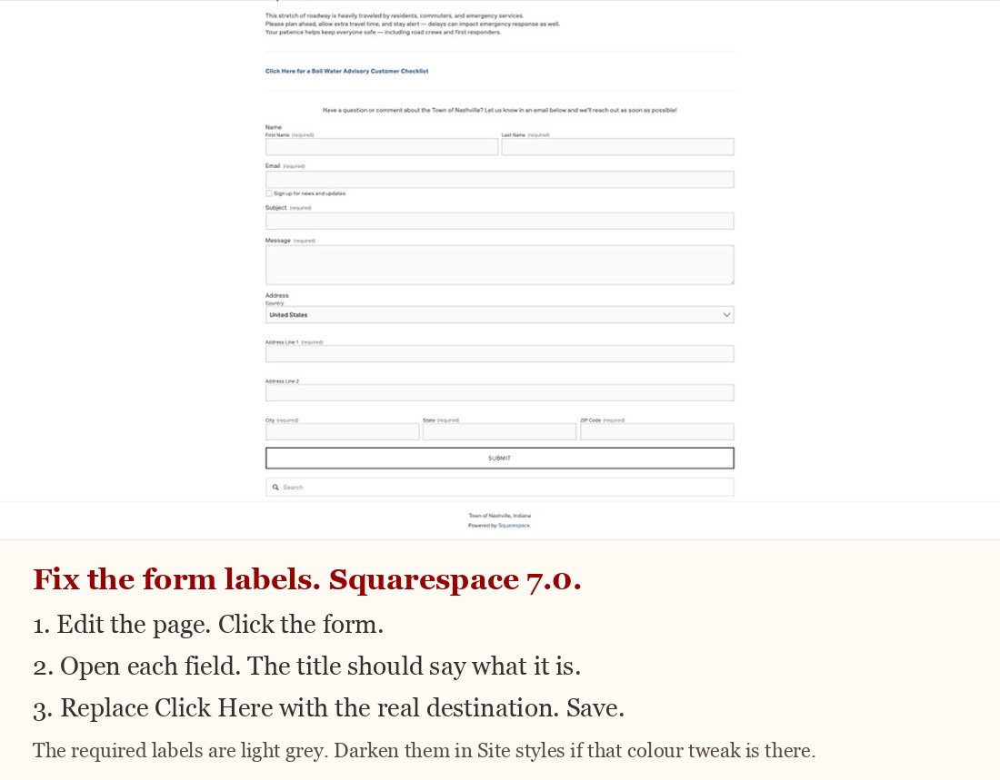

Town of Nashville accessibility assessment
Scope note: this semester is an accessibility assessment, not a design build. There is no Lead Design Manager on the team. Serve IT does not push changes to the live Squarespace site from this portfolio. Screenshots are browser evidence from the public site. The calendar view is November 2026.
Introduction / professional profile
- Who you are
- Jade Zhao. Informatics student at Indiana University Bloomington, Luddy School, expected May 2027. Minors in Business Technology and User Experience (UX) Research. First-generation college student. Web Design and Accessibility Intern at the Laurie Burns McRobbie Serve IT Clinic, Jan 2024 to Dec 2025. Accessibility Project Lead from Aug 2026. On this project I am team lead, co-leading with Aanya Arora.
- Area of interest
- Digital Humans, human-centred artificial intelligence (AI), accessibility, and human-centred business technology. The question under the research is what makes a system trustworthy enough that people keep using it.
- Technical strengths
- WCAG (Web Content Accessibility Guidelines) 2.1 Level AA reviews, HTML structure, written remediation, and a handoff a partner can use after the student team is gone.
- The kinds of work you want to do
- Work that joins the technical fix to the person who has to use the system. Accessibility, human-centred product work, and Digital Humans research.
- Résumé, contact, and links
- Portfolio PDF (résumé is inside it). jlzhao@iu.edu. LinkedIn. GitHub. jadexzhao.github.io/jadexzhao.
Project overview
Residents and visitors use townofnashville.org to find meetings, read notices, and send a message to the town.
The top navigation is light grey on white, keyboard focus is hard to see, and the homepage has no skip link and more than one h1.
Those barriers sit on the same pages as the contact form.
- Dates
- Fall 2026. This is the semester project. The team meets Thursdays, 18:00 to 19:00. The public calendar screenshot on this page is a November 2026 view.
- Team
- Serve IT accessibility team for the Town of Nashville. Co-leads: Jade Zhao and Aanya Arora. We alternate the weekly Canvas record. Interns: Chiara Bouckaert, Mueyae Pae, and Bhumika Sati. Clinic supervisor: Maya Marotti. Lead Design Manager: not applicable, because this is an assessment rather than a design build.
- What the team was asked to do
- Review townofnashville.org against WCAG 2.1 Level AA and turn the barriers into prioritised notes the town can apply. The team was not asked to redesign the site or to edit the live Squarespace pages.
- What my part entailed
- I co-led the assessment with Aanya Arora. My part was the scope of the review, the weekly team record, and this write-up: the pages we checked, the findings, and the fixes in priority order. Client notes go through Maya Marotti before they go to the town contact, Maddie Bond.
Client description
Client: Town of Nashville, Indiana. Public site: townofnashville.org. The site is the town's public web presence. The homepage carries Town Hall, a contact block, and a contact form. A separate page lists the calendar of meetings and events. The town contact for this semester is Maddie Bond. Email addresses stay off this page.
- Client needs
- The public site has to work for people who read the navigation, look up a meeting, and use the contact form. The semester need is an accessibility assessment with notes the town can use on the Squarespace site they already have. The scope document itself is not republished here.
- What challenge the project was solving
-
Menu labels at about
rgb(153, 153, 153)on white are hard to read. Keyboard users lose their place when focus is not visible, and there is no skip link. Severalh1headings flatten the homepage outline. The contact form's required cues are the same light grey. - Why the agency needed this
- Meeting times and the contact form are how people reach town business. A small staff keeps the Squarespace site after the semester ends. They need a short list that names the page, the barrier, and a change, not a student team that stays on the account.
Process / approach
Final deliverables: this written review, three screenshots, the findings list, and the prioritised remediation notes. No live deploy.
- Treat the semester as an assessment. No design-build role. Production edits stay with the town.
- Meet Thursdays, 18:00 to 19:00. Co-leads alternate the Canvas attendance record. Task tracking for the team sits on a Microsoft Planner Kanban board.
- Review the public homepage, the Calendar of Meetings and Events, and the contact form. Check keyboard focus, colour contrast, skip link, landmarks, headings, and form labels.
- Save a screenshot of each of those views so a reader can see the nav, the November 2026 calendar, and the form the notes refer to.
- Sort findings. P1 is focus, navigation contrast, and a skip link. P2 is headings and the form. P3 is white text on the hero photo.
- Write each note as a Squarespace change the town can try. Do not push those changes from this portfolio. Send client-facing notes through Maya Marotti first.
Standard used: WCAG 2.1 Level AA, focused on contrast of normal text (4.5:1), focus visible, bypass blocks, info and relationships, and labels on the contact form. The iteration is the priority order. A contrast failure on the main menu comes before a hero scrim, because the menu is on every page.
Professional and technical skills
- WCAG 2.1 Level AA review (contrast, focus, skip link, headings, form labels)
- Squarespace 7.0, the town's CMS. Design, then Site styles, for the menu colour. We did not edit production.
- Microsoft Planner Kanban, for the semester's task tracking
- Canvas, for the weekly attendance record the co-leads alternate
- Team leadership and facilitation of the Thursday meeting
- Client communication through the clinic supervisor before notes go to the town
- Screenshot evidence and written remediation
- GitHub, for publishing this case study
Deliverables / artifacts



Findings
-
Colour contrast (nav). Top navigation links render at about
rgb(153, 153, 153)on white at roughly 12px. That pairing is well under the 4.5:1 AA ratio for normal text, so menu labels are hard to read. - Focus visibility. Keyboard focus on sampled links, buttons, and form controls showed no reliable visible outline or focus ring (outline often computed as none). Keyboard-only users cannot tell where they are.
-
Skip link and landmarks. No skip-to-content link was present. Landmark support
was incomplete: navigation exists, but dedicated
main,header, andfooterlandmarks were not detected on the homepage. -
Heading structure. The homepage exposes multiple
h1headings (for example "Town of Nashville", "What's Going On?", "Project Retree", and the SR 46 notice). A screen-reader user relying on one page title loses a clear document outline. - Forms. The contact form exposes required name, email, subject, message, and address fields. Most controls have accessible names, but required cues rely on light grey "(required)" text, field borders are very light, and a generic "Click Here ..." link sits above the form.
- Hero text over imagery. White page titles over photographic banners can fail contrast where the photo is light (sky or pale stone).
Prioritised remediation (proposed)
-
P1 · Focus styles.
Add a global
:focus-visiblestyle with at least a 2px solid high-contrast outline (or equivalent box-shadow) on all interactive controls. Do not remove browser focus without a stronger replacement. -
P1 · Navigation contrast.
Darken inactive nav text to meet 4.5:1 against white (for example near
#595959or darker). Keep the gold active state only if it still meets contrast. -
P1 · Skip link.
Add a visually hidden "Skip to main content" link as the first focusable control, revealed on focus, targeting a single
mainlandmark. -
P2 · Headings.
Keep one
h1per page for the page title. Demote section titles toh2andh3in logical order. - P2 · Form clarity. Strengthen label and required-indicator contrast. Thicken input borders. Replace "Click Here ..." with descriptive link text. Confirm error messages are programmatically associated with fields.
- P3 · Hero overlays. Add a dark scrim or text shadow behind white titles so contrast holds across banner frames.
How to make the change
Squarespace 7.0. These are the clicks. We do not edit the live site from here.


No client quotation is printed here. I do not have a cleared quote to attribute.
Final reflection
What I learned
The menu is the product. It sits on the homepage, the calendar, and above the contact form. A grey that looks quiet in a design still fails 4.5:1, and then every other page inherits the same barrier. Fixing that one colour does more than a new layout would.
Challenges, and how I handled them
The town keeps the Squarespace site. We cannot ship the fix ourselves, and a note that says "improve accessibility" does not help staff who were not in the Thursday meeting. I split the list by priority and named the computed colour, the missing skip link, and the form text so someone can find the same thing. Client-facing notes go through Maya Marotti first, so the town hears one clear version rather than five.
What I would improve
I would attach the semester scope sentence and a before-and-after of the nav colour in the same week as the review, while the Squarespace settings are still fresh. I would also keyboard-test the contact form error states and write those down before the semester ends.
Team communication
Co-leading means the weekly record cannot live in one person's head. Aanya Arora and I alternate the Canvas attendance note, and the task list lives on the Planner board, so an intern who misses Thursday can still see the priority. The same rule applies to the town: if Maddie Bond was not in the room, the written note has to stand alone.
Ethical considerations
A town website is how people reach meetings and send a message. A barrier there is a resident or a visitor locked out of public information. This page stays on the public HTML. It does not publish email addresses, and it does not list anything beyond what a visitor can already see on townofnashville.org. The town applies any change. We do not.
Technical growth
Leading the review meant choosing an order, not only finding issues. Contrast on a 12px menu, a missing focus ring, and a missing skip link are the P1s because they block the whole site. The hero scrim can wait. That ordering is the technical decision I want the handoff to show.
Related Serve IT work: Middle Way House accessibility case study · City of Bloomington accessibility case study. Fuller scrapbook: portfolio.pdf.